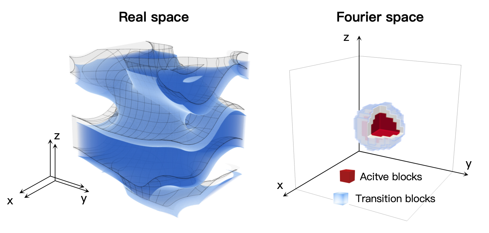
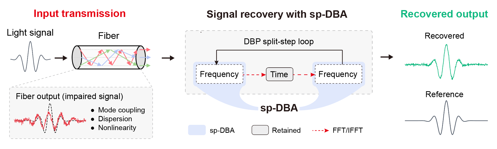

sp-DBA

Transform-domain workflows repeatedly update large spectral or frequency-space arrays even when significant changes concentrate in localized modes, while widespread real-space variation limits traditional spatial block adaptivity. To address this, we developed sp-DBA, an adaptive block-activation framework with GPU-aligned execution.
I led the design and implementation under Prof. Yang Xia’s supervision.
Jingkun Jiang, Pingchuan Deng, and Yang Xia*. sp-DBA: a general framework for adaptive transform-domain computation. (2026).
Key Advantages
Efficient GPU execution. Hardware-aligned block adaptivity reduces unnecessary updates and thread divergence.
Compatibility with existing optimizations. Works alongside optimized transforms and model-specific acceleration.
Solver compatibility. Preserves equations, discretization, and transformed representations.
Lightweight integration. Reuses existing update routines with minimal solver-specific code changes.
Polycrystalline Coarsening (Phase-field crystal, PFC)

PFC models describe crystal microstructure through a spatially periodic density field. In our coarsening tests, the dominant Fourier amplitudes concentrate near Bragg rings (ring-shaped features associated with the crystal lattice), providing localized spectral blocks for sp-DBA to update selectively. More details →
Pattern Formation (Reaction–cross-diffusion, RCD)

RCD models describe interacting species and coupled transport. More components make Fourier-space updates increasingly costly, giving selective execution greater value for complex pattern-forming systems. I combined sp-DBA with eigendecomposition, retaining close agreement with full-update morphologies and structure factors in the tested cases. More details →
Optical Communications (Digital backpropagation, DBP)

DBP is an engineering transform-domain workflow for recovering signals propagated through multimode optical fibers. I integrated sp-DBA into the repeated frequency-domain linear updates of a split-step solver. Controlled Gaussian wave-packet tests retained close agreement with the transmitted reference; in the reported benchmark, the frequency-domain linear updates were 21.3× faster than full-update Regular. More details →
I am also exploring how these ideas might extend to other transforms, multiresolution methods, and unstructured meshes.